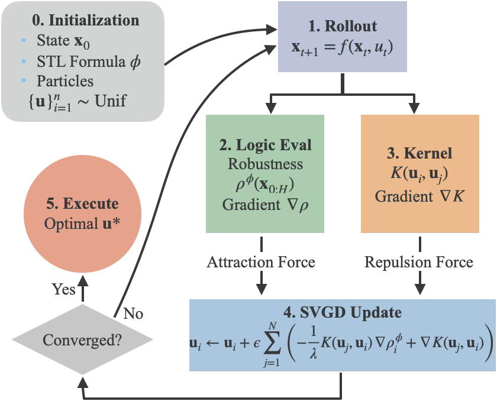
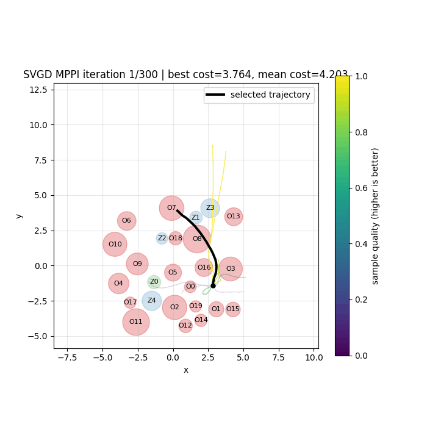
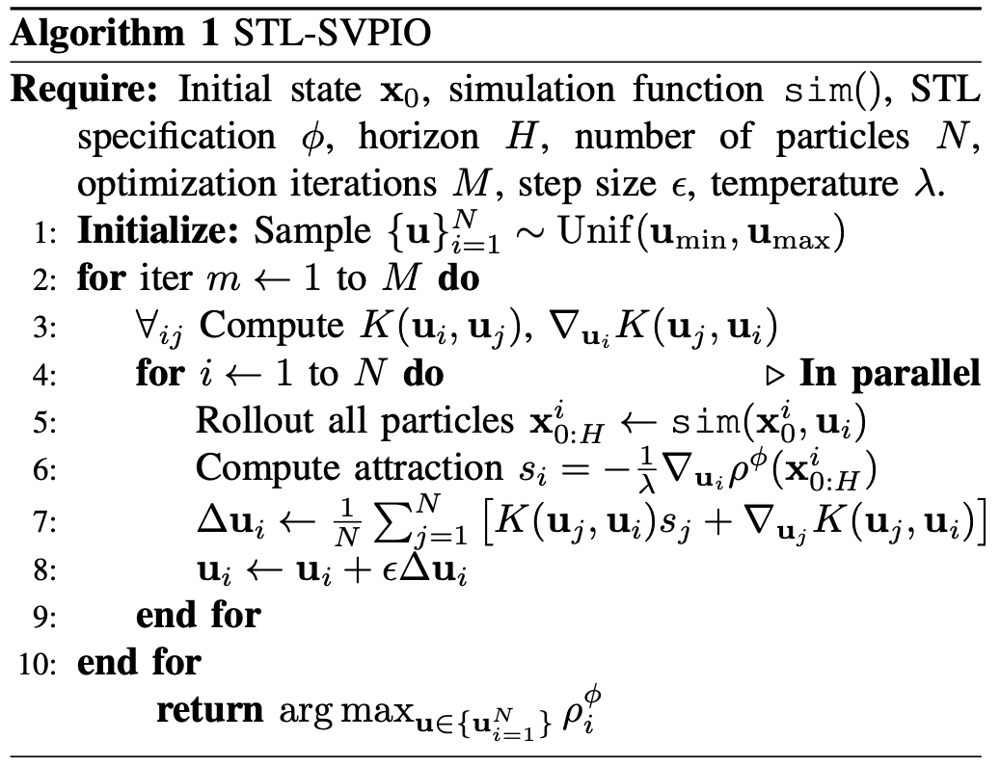
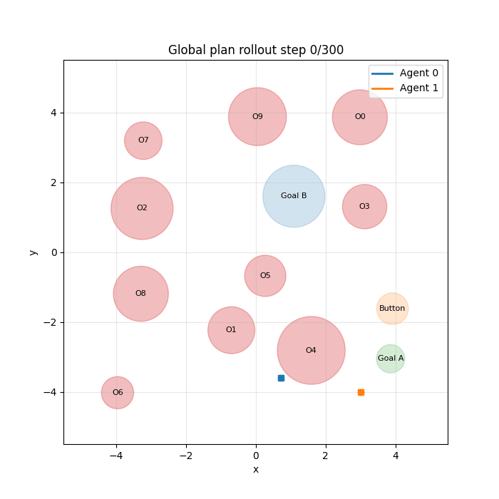
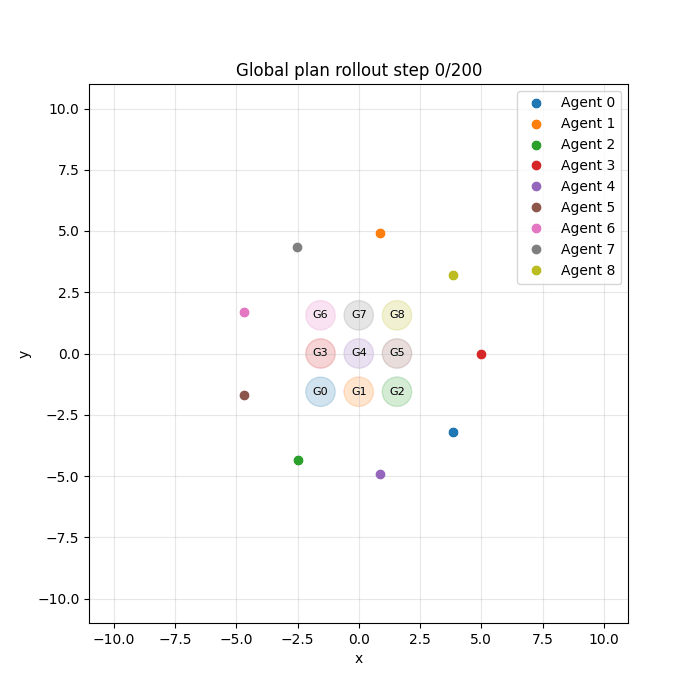
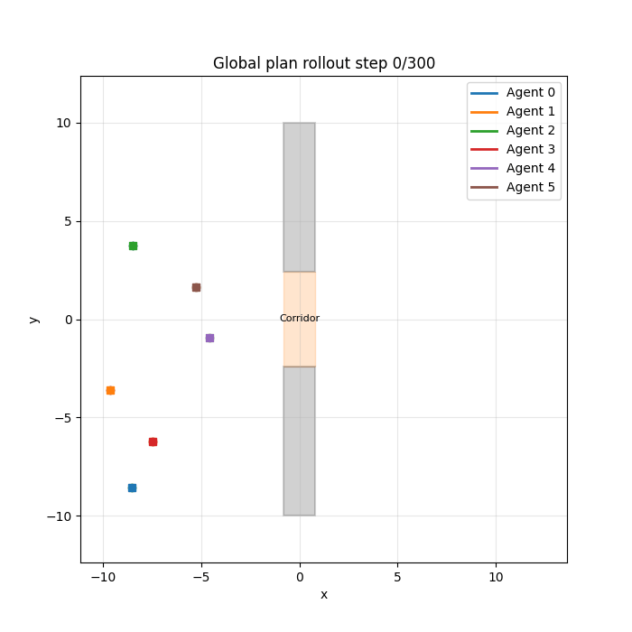
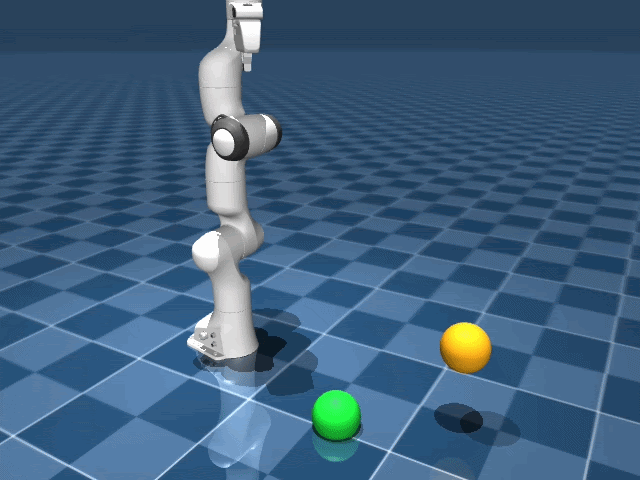
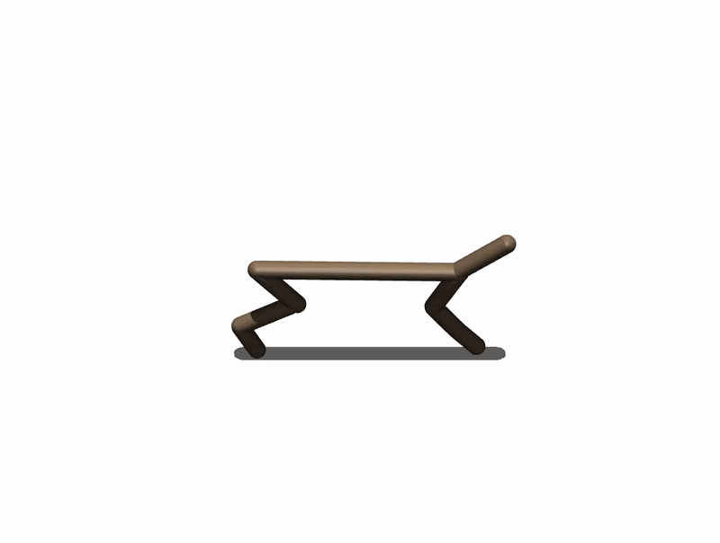
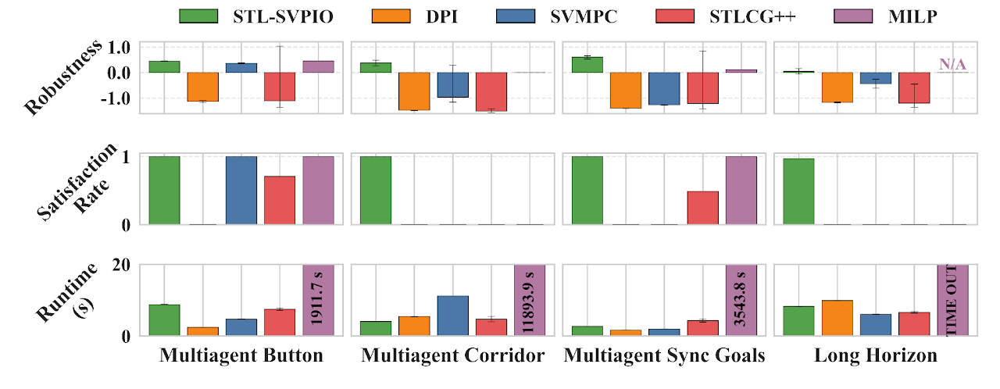

Abstract

Signal Temporal Logic (STL) enables formal specification of complex spatiotemporal constraints for robotic task planning. However, synthesizing long-horizon continuous control trajectories from complex STL specifications is fundamentally challenging due to the nested structure of STL robustness objectives.
Existing solver-based methods, such as Mixed-Integer Linear Programming (MILP), suffer from exponential scaling, whereas sampling methods, such as Model-Predictive Path Integral control (MPPI), struggle with sparse, long-horizon costs. We introduce Signal Temporal Logic guided Stein Variational Path Integral Optimization (STL-SVPIO), which reframes STL as a globally informative, differentiable reward-shaping mechanism.
By leveraging Stein Variational Gradient Descent and differentiable physics engines, STL-SVPIO transports a mutually repulsive swarm of control particles toward high robustness regions. Our method transforms sparse logical satisfaction into tractable variational inference, mitigating the severe local minima traps of standard gradient-based methods. We demonstrate that STL-SVPIO significantly outperforms existing methods in both robustness and efficiency for traditional STL tasks.
Moreover, it solves complex long-horizon tasks, including multi-agent coordination with synchronization and queuing while baselines either fail to discover feasible solutions, or become computationally intractable. Finally, we use STL-SVPIO in agile robotic motion planning tasks with nonlinear dynamics, such as 7-DoF manipulation and half cheetah back flips to show the generalizability of our algorithm.
IROS 2026 · Preprint Project website Code

STL-SVPIO uses particle based propsal distribution (colored trajectories in the left image). At each iteration, the gradient of the STL robustness is calculated to push each particle in the direction to increase the robustness. At the end of the iteration the particles converge to a solution to the STL specification.

STL-SVPIO finds solutions to complicated multi-agent coordination problems

Task: Agent 0 and Agent 1 has to reach Goal A and Goal B, respectively, by the end of the horizon. Agent 0 cannot enter Goal A until Agent 1 presses the button.

Task: All agents must reach their corresponding goal within +/- 2 steps with each other, while avoiding collisions, by the end of the horizon.

Task: All agents must get to the right side of wall without collision with the walls by the deadline. The corridor can only have one agent occupying it at any time.
STL-SVPIO generalizes to general motion planning for manipulation and locomotion
Franka Panda two goal reaching

Task: the end effector's position should be within both goals by the end of the horizon
Half cheetah backflip

Task: The torso height must be greater than a minimum height, and the torso pitch rate must be less than a maximum pitch rate, and the difference between the starting torso pitch angle and final pitch angle must be greater than a full roation, by the end of the horizon.
STL-SVPIO performs exceptionally well compared to baselines

Among sampling based methods, STL-SVPIO uses the least amount of samples, while achieving the best results across all scenarios in robustness and satisfaction rate across 100 different sampling seeds. Traditional STL solvers like MILP either finds solutions in times orders of magnitude longer, or fail to find a solution before the 10 hour time limit.
Authors
Hongrui Zheng1 Zirui Zang1 Ahmad Amine1 Cristian-Ioan Vasile2 Rahul Mangharam1
University of Pennsylvania1 Lehigh University2